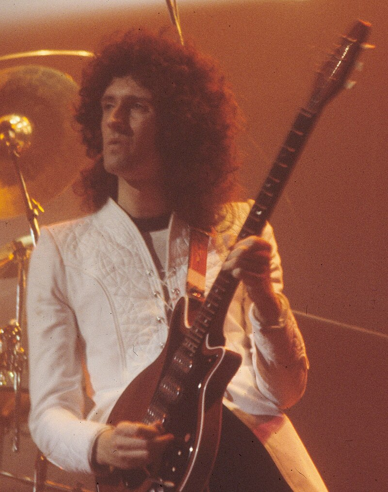
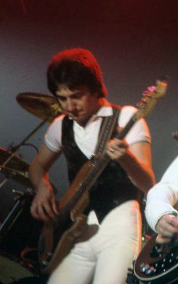

Sucesso Mundial: 1975-77
Entre o final de 1974 e o início de 1975, a vida pessoal de todos os integrantes ia mal. A começar por John Deacon, que estava prestes a casar-se e precisava de dinheiro; Freddie Mercury dividia um pequeno apartamento com a sua namorada Mary Austin, usando o seu piano como cabeceira para a cama. Para Brian May, era pior: tinha um quarto mofado e com cheiro de peixe podre para dividir com a sua namorada, sem abastecimento de água. Por conta disso, a EMI contratou o advogado Jim Beach para analisar o contrato da banda com a Trident. Na época, foi lançado o single "Now I'm Here", e no dia seguinte Deacon casou-se com Veronica Tetzlaff, ex-colega de escola a qual namorava há anos e estava grávida do seu primeiro filho, Robert. Após a lua de mel, o baixista juntou-se aos demais membros e fez a turnê de divulgação de Sheer Heart Attack em território norte-americano, com o Kansas abrindo os shows.
No entanto, foi um fracasso, sobretudo devido a problemas vocais que Freddie teve durante a divulgação. Depois, foram ao Japão, onde tiveram boa receção. Roger Taylor, em choque, disse que viu uma espécie de "beatlemania" quando esteve lá, mas a realidade de pobreza na qual viviam no Reino Unido era bem diferente. Toda a banda estava insatisfeita com a Trident, pois, para Norman Sheffield, o lucro que deram não era suficiente para cobrir o valor que investiram no Queen. Como resposta, escolheram John Reid, que também trabalhava com Elton John, como novo gerente de sua carreira. Em agosto daquele ano, o conjunto assinou um acordo com a Trident, que custou uma multa rescisória e direito sobre um por cento dos royalties dos próximos seis discos de sua discografia.
Sob o comando da EMI, a banda passou a ensaiar para seu próximo trabalho e formular as primeiras canções individualmente em sete estúdios diferentes. Uma delas foi "Bohemian Rhapsody", que ficaria nove semanas no topo das paradas do Reino Unido, e projetaria o grupo mundialmente. Entretanto, a canção, de estrutura longa e complexa, utilizava-se de muitos vocais, e acabou custando muito caro. Freddie a queria como single, e quase todos estavam de acordo, exceto John Deacon, que estava temeroso quanto a duração. A EMI teve reação semelhante a Deacon. No entanto, a gravadora decidiu pelo lançamento. O medo do Queen era que o trabalho fosse um fracasso, e caso ocorresse não teria outra alternativa a não ser encerrar as atividades e pagar as dívidas. Todavia, assim como o single, o álbum recebeu boas avaliações da crítica e vendeu milhões de cópias. Além de "Bohemian Rhapsody", a banda lançou "You're My Best Friend", de John em um compacto e realizou uma turnê internacional bem-sucedida. A Night at the Opera é geralmente considerado o melhor trabalho da carreira do Queen, mesclando influências de hard rock, pop, rock progressivo, heavy metal e outros gêneros musicais, assim como feito em Sheer Heart Attack.
Os principais êxitos do álbum se devem às canções "We Will Rock You" e "We Are the Champions", de May e Mercury, respetivamente. Os integrantes da banda, principalmente Brian, não levaram "We Are the Champions" a sério por sua letra egocêntrica, mas seu desempenho nas paradas foi extremamente positivo, posteriormente se tornando uma espécie de hino desportivo, político e de outros tipos de organizações. A cada álbum, o lado comercial do Queen soava mais evidente, o que aumentava seu sucesso e em contrapartida embasava críticas da mídia especializada acerca de sua música. O projeto chegou a quarta posição no Reino Unido e o topo das paradas dos Estados Unidos.